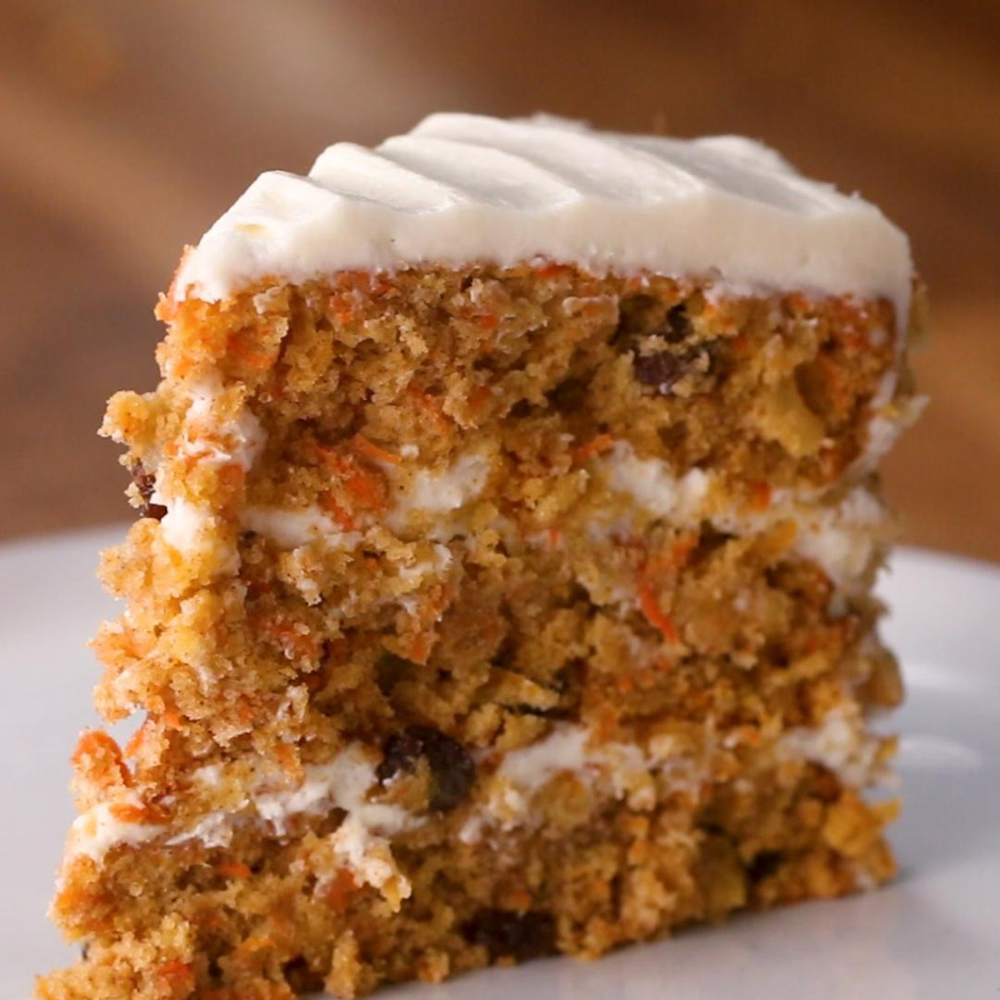

Carrot Cake

Description
This carrot cake is incredibly moist, bursting with flavor, and decorated with a to-die-for cream cheese frosting.
Ingredients for Cake Base
- 3 cups shredded carrots
- 2 cups flour
- 2 cups sugar
- 1 teaspoon baking powder
- 1 teaspoon baking soda
- 1 teaspoon cinnamon
- 1 teaspoon nutmeg
- 1 teaspoon cloves
- 1 teaspoon vanilla extract
- 1 cup oil
- 4 large eggs
Steps for Cake Base
- Grease and flour two round cake pans.
- Mix flour, sugar, baking powder, baking soda, and spices.
- Add carrots, oil, eggs, and vanilla and beat until combined.
- Pour batter into pans and bake in 350 degree oven for 30-35 minutes.
- Cool cakes on wire racks for at least 10 minutes.
- Remove cakes from pans and frost with cream cheese frosting.
Ingredients for Frosting
- 8 ounces cream cheese
- 1/2 cup butter
- 2 teaspoons vanilla extract
- 4.5 cups powdered sugar
Steps for Frosting
- Beat together cream cheese, butter, and vanilla until light and fluffy.
- Gradually add 2 cups sifted powdered sugar, beating well.
- Gradually beat in 2.5-2.75 cups of additional powdered sugar.
- Add frosting to cake layers, cover, and refrigerate.